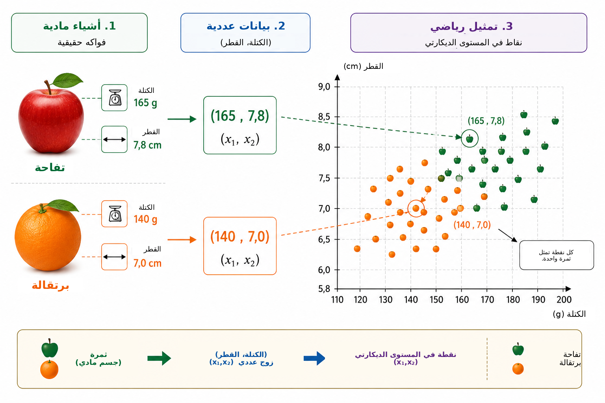
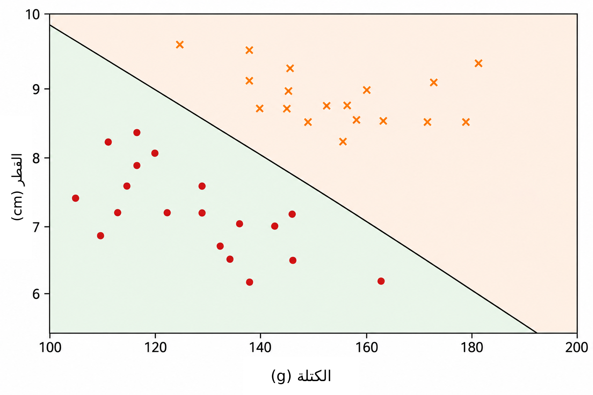
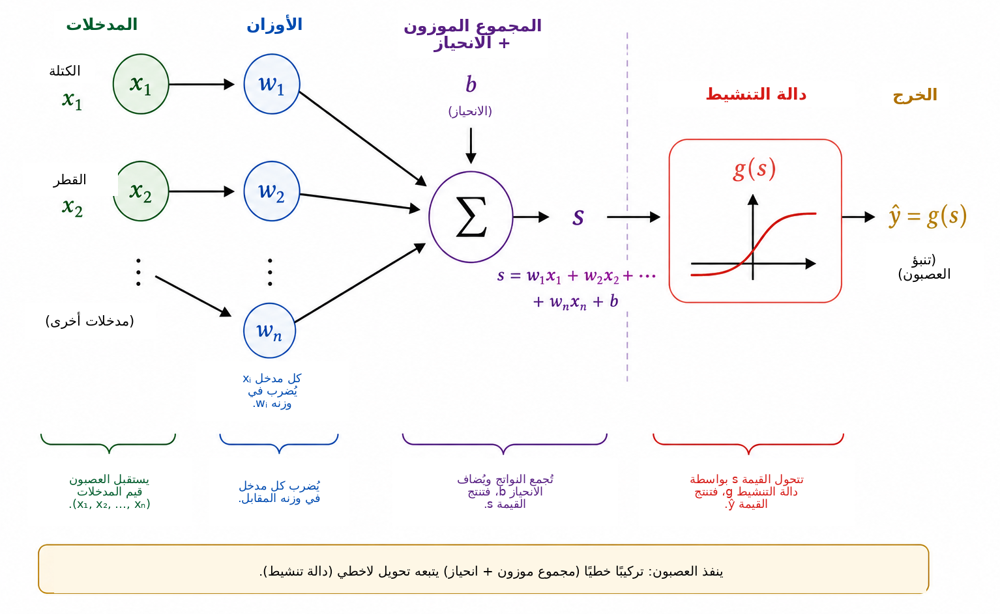
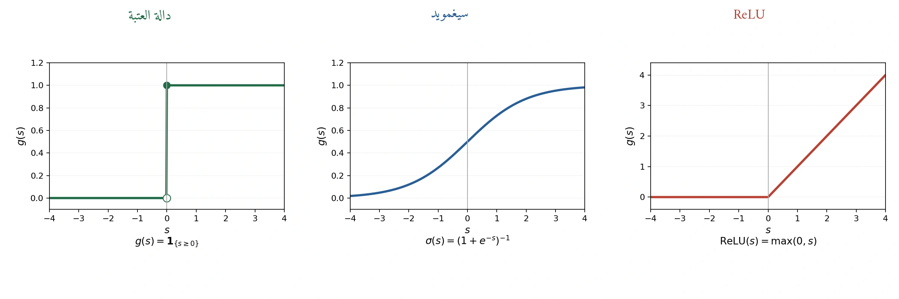
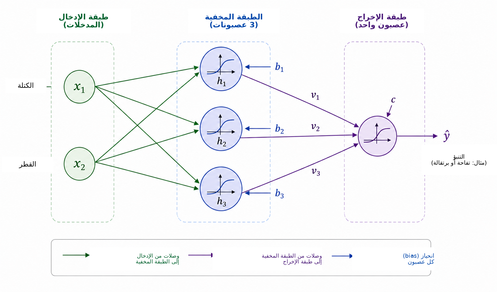
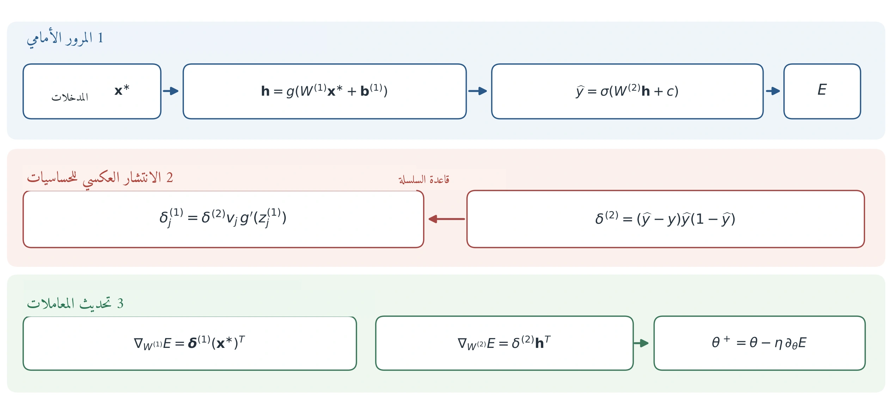
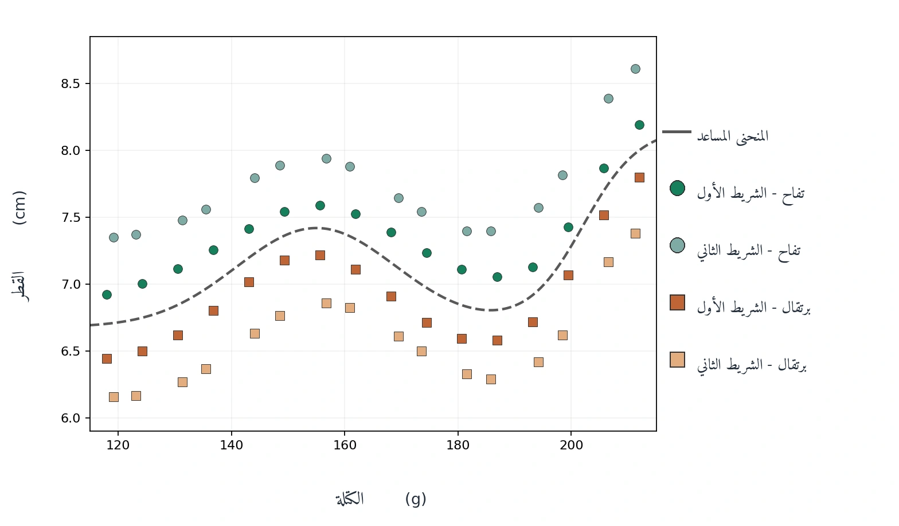
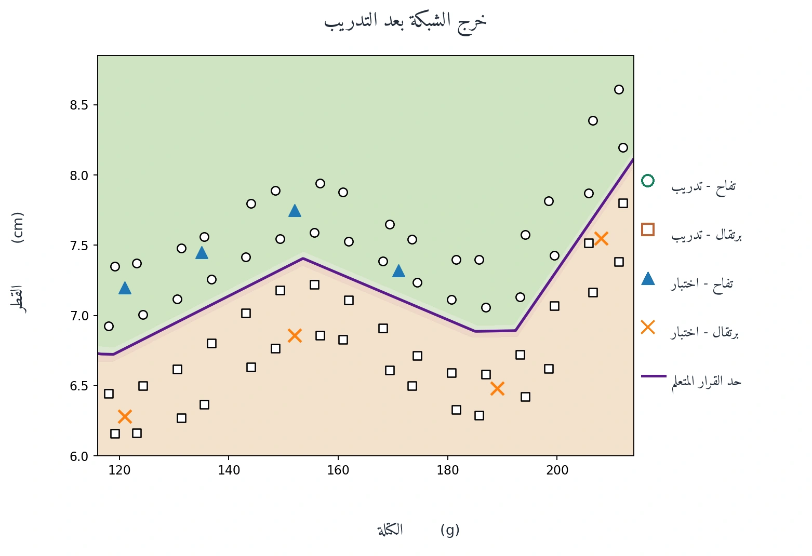

متى يستطيع الحاسوب أن يتعلم؟
في حياتنا اليومية نتخذ قرارات تصنيفية من دون أن نشعر بذلك تقريبًا. فعندما ننظر إلى ثمرة نتعرف سريعًا إلى كونها تفاحة أو برتقالة؛ وعندما تصل رسالة إلى الهاتف نميز بين محادثة حقيقية وإعلان غير مرغوب فيه؛ وفي التحليل الطبي يمكن دمج عدة قياسات لدعم قرار؛ وفي المؤسسات المالية تُقيَّم معلومات متعددة قبل منح الائتمان. وفي جميع هذه الأمثلة تُؤخذ عدة خصائص معًا لإنتاج إجابة.
في كثير من برامج الحاسوب التقليدية يكتب المبرمج صراحةً القواعد التي تنتج هذه الإجابة. وينجح هذا الأسلوب عندما تكون القواعد معروفة ويمكن التعبير عنها بوضوح، لكنه يصبح أقل فاعلية عندما تكون البيانات شديدة التباين أو عندما يصعب صياغة كل الشروط اللازمة لاتخاذ قرار جيد مسبقًا. وهذا يقود إلى سؤال طبيعي:
هل يمكننا بناء برنامج يتعلم قاعدة اتخاذ القرار من الأمثلة بدلًا من أن يتلقى القاعدة مسبقًا؟
هذه إحدى الأفكار المركزية في تعلم الآلة، وهو مجال من مجالات الذكاء الاصطناعي يهتم بالطرائق التي تلائم النماذج انطلاقًا من البيانات . في مسألة التعلم الخاضع للإشراف تتلقى الخوارزمية أمثلة مع إجاباتها الصحيحة، ونبحث عن نموذج يستطيع أيضًا تقديم تنبؤات مفيدة لحالات لم تُستخدم أثناء التدريب. ومن بين النماذج الكثيرة المطورة لهذا الغرض أصبحت الشبكات العصبية الاصطناعية مهمة في تطبيقات مثل التعرف على الصور ومعالجة اللغة وتحليل الإشارات والتنبؤ بالسلاسل الزمنية .
سبق أن ناقش باتيستا ومارتينز في مجلة Professor de Matemática Online استخدام الشبكات العصبية بوصفها جسرًا بين الرياضيات والحوسبة والتعليم المدرسي ، وقدما نشاطًا يجمع بين إعداد المعلمين وبايثون والتعرف على الأرقام. يسلك هذا المقال مسارًا مكملًا. وهدفنا الرئيس هو كشف البنية الرياضية الداخلية لشبكة عصبية صغيرة، بدءًا من الهندسة التحليلية والتقدم خطوةً خطوة نحو حساب التدرج والتنفيذ اليدوي للانتشار العكسي.
على الرغم من تعقيد التطبيقات الحديثة، يمكن تقديم الجوهر الرياضي للشبكة العصبية باستخدام أفكار مألوفة نسبيًا. ففي المستوى الأساسي، الشبكة العصبية تركيب لدوال تُضبط معلماتها استنادًا إلى البيانات. نبدأ بمسألة هندسية بسيطة، ثم نعيد تفسير خط فاصل على أنه عصبون اصطناعي، ونصل عدة عصبونات، وندرس دور دوال التنشيط، ونبين كيف يمكن استخدام المشتقات لضبط معلمات الشبكة آليًا. ثم ننفذ مثالًا صغيرًا كاملًا بلغة بايثون مع الحفاظ على مطابقة مباشرة بين المعادلات والشيفرة.
تمثيل المشكلة رياضيًا
لفهم كيفية عمل شبكة عصبية، نبدأ بمسألة بسيطة عمدًا: التمييز بين التفاح والبرتقال. للثمرة خصائص كثيرة يمكن أن تكون مفيدة لهذه المهمة، مثل اللون والكتلة والقطر والملمس والرائحة. ومع ذلك لا يحتاج نموذج رياضي أولي إلى إدخال كل هذا التعقيد. سنستخدم مقدارين فقط يسهل قياسهما: الكتلة بالغرام والقطر بالسنتيمتر.
لذلك ستمثل كل ثمرة بزوج مرتب \[(x_1,x_2),\] حيث \[x_1=\text{الكتلة} \qquad\text{و}\qquad x_2=\text{القطر}.\]
وهكذا يمثل الزوج \((155,\;7.2)\) ثمرة كتلتها \(155\) غ وقطرها \(7.2\) سم. وعندما نستبدل الجسم الفيزيائي بقياسين عدديين، نربط كل ثمرة بنقطة في المستوى الديكارتي: الإحداثي الأول يعطي كتلتها والثاني قطرها. يوضح الشكل 1 هذا التمثيل لمجموعة افتراضية من التفاح والبرتقال.

يغير هذا التحويل الطبيعة الظاهرية للمشكلة. فبدلًا من أن نسأل مباشرة كيف نتعرف إلى تفاحة أو برتقالة، يمكننا طرح سؤال هندسي: كيف نفصل نقاط الفئتين في المستوى؟ هذا التغير في وجهة النظر أساسي في تعلم الآلة. فالصور والنصوص والأصوات والإشارات التجريبية يجب جميعًا تحويلها إلى تمثيلات عددية قبل أن تتمكن خوارزمية من معالجتها. في مثالنا لكل جسم إحداثيان فقط؛ أما في التطبيقات الحقيقية فقد يحتوي التمثيل على مئات أو آلاف أو حتى ملايين المركبات. والمبدأ واحد: يرتبط كل مثال بمجموعة من الأعداد، ويبحث النموذج عن قاعدة تحول هذا التمثيل إلى الإجابة المطلوبة.
نبدأ بأبسط قاعدة هندسية متاحة ونسأل ما إذا كان خط مستقيم واحد يستطيع فصل نقاط التفاح عن نقاط البرتقال بصورة مناسبة.
خط مستقيم كمُصنِّف
بعد تمثيل كل ثمرة بنقطة في المستوى الديكارتي يصبح التصنيف مسألة هندسية: هل يمكن لخط مستقيم أن يفصل التفاح عن البرتقال؟ يجسد هذا السؤال الفكرة الأساسية لعائلة مهمة من طرائق تعلم الآلة تسمى المُصنِّفات الخطية.
لنعتبر خطًا يمر عبر سحابة البيانات كما في الشكل 2. يقسم الخط المستوى إلى نصفي مستوى. فإذا وقعت معظم نقاط التفاح في جانب ومعظم نقاط البرتقال في الجانب الآخر، أمكن استخدام موضع ثمرة جديدة بالنسبة إلى الخط قاعدةً للتصنيف. وبعد قياس كتلتها وقطرها نمثلها بنقطة ونحدد الجانب الذي يحتوي هذه النقطة.

في المستوى الديكارتي \((x_1,x_2)\) يمكن وصف خط بالمعادلة \[w_1x_1+w_2x_2+b=0, \qquad (w_1,w_2)\neq(0,0).\]
المتجه \((w_1,w_2)\) عمودي على الخط، ولذلك يحدد اتجاهه، في حين تسهم المعلمة \(b\) في تحديد موضعه. يتضمن هذا التمثيل قدرًا صغيرًا من التكرار: فضرب \(w_1\) و\(w_2\) و\(b\) في الثابت غير الصفري نفسه ينتج الخط ذاته تمامًا. ومن ثم فالمعلمات التي تصف الحد ليست فريدة. كما يعتمد تفسيرها العددي على مقياس المتغيرات. وبما أن الكتلة تقاس بالغرام والقطر بالسنتيمتر، فلا ينبغي مقارنة القيم العددية لـ \(w_1\) و\(w_2\) من دون مراعاة اختلاف الوحدات.
توفر معادلة الخط نفسها طريقة بسيطة لتحديد الجانب الذي تقع فيه نقطة ما. نعرف القيمة \[s(x_1,x_2)=w_1x_1+w_2x_2+b.\]
إذا كان \(s(x_1,x_2)=0\) فإن النقطة تقع على الخط. وإذا كان \(s(x_1,x_2)>0\) فهي في أحد نصفي المستوى، وإذا كان \(s(x_1,x_2)<0\) فهي في النصف الآخر. وإذا قررنا أن القيم الموجبة تقابل التفاح والسالبة تقابل البرتقال، تصبح القاعدة \[\begin{cases} s(x_1,x_2)\geq 0 & \Longrightarrow \text{تفاحة},\\ s(x_1,x_2)<0 & \Longrightarrow \text{برتقالة}. \end{cases}\]
على سبيل المثال، لنأخذ الحد المحدد بـ \[w_1=\frac{1}{10}, \qquad w_2=2, \qquad b=-30.\] ولثمرة كتلتها \(160\) غ وقطرها \(7.8\) سم، \[\begin{aligned} s &=\frac{1}{10}\times160+2\times7.8-30\\ &=16+15.6-30\\ &=1.6. \end{aligned}\] وبما أن القيمة موجبة، تقع النقطة في نصف المستوى الذي ربطناه بالتفاح. لذلك يصنف هذا المُصنِّف الثمرة على أنها تفاحة.
ليس كل اختيار لـ \(w_1\) و\(w_2\) و\(b\) يؤدي إلى تصنيف جيد. فبعض الخطوط تفصل المجموعتين بصورة سيئة، في حين ترتكب خطوط أخرى أخطاء أقل. ومسألة التعلم هي تحديد قيم المعلمات التي تقلل مقياسًا لخطأ النموذج باستخدام أمثلة سبق وسمت فئاتها. فبدلًا من برمجة موضع الخط مباشرة، نريد من الخوارزمية أن تضبط معاملاته انطلاقًا من البيانات.
يمكن لخط واحد أن يعمل جيدًا عندما تكون الفئات قابلة للفصل الخطي تقريبًا. أما مجموعات البيانات الأكثر تعقيدًا فقد تتطلب حدًا غير خطي. وقبل معالجة هذا القيد، نعيد تفسير المُصنِّف الذي بنيناه بوصفه وحدة حسابية أولية: عصبونًا اصطناعيًا.
العصبون الاصطناعي
في القسم السابق استخدمنا التعبير \[s=w_1x_1+w_2x_2+b\] لتحديد الجانب الذي تقع فيه الثمرة بالنسبة إلى خط. ويمكن النظر إلى التعبير نفسه بوصفه المرحلة الأولى من الحساب الذي ينفذه عصبون اصطناعي. يستقبل العصبون مدخلات عددية، ويجمعها باستخدام أوزان وانحياز، ثم يطبق دالة رياضية للحصول على خرجه.
في مثالنا المدخلان هما الكتلة \(x_1\) والقطر \(x_2\). يُضرب كل مدخل في معلمة تسمى وزنًا، ثم تجمع النواتج مع حد ثابت \(b\) يسمى الانحياز. يوضح الشكل 3 هذا الحساب تخطيطيًا.

تحدد الأوزان كيف تؤثر التغيرات في المدخلات في القيمة \(s\). فإذا أبقينا \(x_2\) وكل الكميات الأخرى ثابتة، فإن تغيرًا \(\Delta x_1\) يغير \(s\) بمقدار \(w_1\Delta x_1\). وبالمثل فإن تغيرًا \(\Delta x_2\) يغير القيمة بمقدار \(w_2\Delta x_2\). وللإشارة أهميتها أيضًا: فالوزن الموجب يجعل زيادة المدخل تزيد القيمة، بينما ينتج الوزن السالب الأثر المعاكس. ويجب استخدام هذا التفسير بحذر عندما تكون للمتغيرات وحدات ومقاييس مختلفة. ولهذا السبب تقوم التطبيقات العملية غالبًا بتطبيع بيانات الإدخال أو توحيدها قبل التدريب.
الانحياز \(b\) هو الحد الثابت في التحويل التآلفي. هندسيًا يسمح بتحريك حد القرار. فإذا كان \(b=0\) فإن المعادلة \[w_1x_1+w_2x_2=0\] تجبر الخط على المرور بنقطة الأصل. أما بوجود الانحياز فيمكن أن ينتقل الحد إلى مواضع أخرى. وبصورة مكافئة، عندما يكون \(x_1=x_2=0\) تصبح القيمة ببساطة \(s=b\).
لا يلزم أن تكون القيمة \(s\) هي خرج العصبون النهائي. عمومًا تطبق عليها دالة تنشيط \(g\): \[\widehat{y}=g(s)=g\left(w_1x_1+w_2x_2+b\right).\] ومن ثم يتكون الحساب من مرحلتين، \[\begin{aligned} s &= w_1x_1+w_2x_2+b,\\[4pt] \widehat{y} &= g(s). \end{aligned}\]
باستخدام قيم المعلمات في القسم السابق نحصل على \(s=1.6\). وإذا اخترنا دالة الخطوة \[g(s)= \begin{cases} 1, & s\geq0,\\ 0, & s<0, \end{cases}\] فإن \(\widehat{y}=g(1.6)=1\). وفق اصطلاحنا تصنف الثمرة على أنها تفاحة. ومع هذا التنشيط يتغير القرار عندما تعبر \(s\) الصفر، ولذلك يكون حد الفئة بالضبط \[w_1x_1+w_2x_2+b=0.\]
إذن العصبون الواحد كائن رياضي بسيط ذو معلمات قابلة للضبط. وتظهر أهميته الحقيقية عند وصل عدد كبير من هذه الوحدات. لكن قبل بناء شبكة نحتاج إلى فهم سبب كون دالة التنشيط ضرورية.
لماذا نحتاج إلى دالة تنشيط؟
يحسب العصبون أولًا قيمة باستخدام تحويل تآلفي، ثم يطبق دالة تنشيط. وهذه المرحلة الثانية ضرورية إذا أردنا للشبكة العصبية أن تمثل علاقات معقدة. ولرؤية السبب، تخيل شبكة لا تستخدم أي دوال تنشيط. عندها ستكون كل وحدة من الشكل \[y=w_1x_1+w_2x_2+b.\]
في مثال أحادي البعد، افترض أن وحدة أولى تنتج \[h=ax+b\] وأن الثانية تحسب \[y=ch+d.\] بالتعويض نحصل على \[y=c(ax+b)+d=acx+(cb+d),\] وهو ما يزال دالة تآلفية في \(x\). وينطبق الأمر نفسه في أبعاد متعددة: تركيب التحويلات التآلفية يبقى تآلفيًا. ولذلك فإن إضافة طبقات كثيرة من دون عملية غير خطية لا تجعل الشبكة أكثر قدرة تعبيرية بصورة جوهرية؛ إذ يمكن استبدال التركيب كله بتحويل تآلفي واحد.
تكسر دالة التنشيط هذا القيد. فبعد حساب القيمة \(s\) يطبق العصبون تحويلًا يكون عادة غير خطي، \[h=g(s).\] وعند وصل عدة وحدات من هذا النوع لا يعود بالإمكان اختزال التركيب الناتج إلى تحويل تآلفي واحد. وهذا يسمح للشبكة ببناء حدود قرار أكثر تعقيدًا.
أبسط دالة تنشيط هي دالة الخطوة، \[g(s)= \begin{cases} 1, & s\geq0,\\ 0, & s<0. \end{cases}\] وهي تنتج قرارًا ثنائيًا ومفيدة جدًا لفهم التصنيف. غير أن مشتقتها تساوي صفرًا عندما \(s\neq0\) وغير معرفة عند \(s=0\). وبما أن التدريب القائم على التدرج يستخدم المشتقات لتحديد كيفية تغير المعلمات، فإن دالة الخطوة غير مناسبة لهذه الآلية التدريبية.
أحد البدائل هو دالة سيغمويد، \[\sigma(s)=\frac{1}{1+e^{-s}}.\] فهي تحول كل عدد حقيقي إلى قيمة محصورة حصرًا بين \(0\) و\(1\). عندما تكون \(s\) سالبة جدًا يقترب الخرج من \(0\)، وعندما تكون موجبة جدًا يقترب من \(1\)، وبين الطرفين يكون الانتقال سلسًا. دالة سيغمويد قابلة للاشتقاق في كل مكان، ومشتقتها \[\sigma'(s)=\sigma(s)\bigl(1-\sigma(s)\bigr).\] ولأن مخرجاتها تقع بين \(0\) و\(1\)، فهي تستخدم كثيرًا في طبقة الإخراج لمُصنِّف ثنائي. وفي صياغة احتمالية مع دالة خسارة مناسبة، يمكن تفسير الخرج على أنه تقدير لاحتمال الفئة الممثلة بالقيمة \(1\). لكن في الطبقات المخفية قد تسبب سيغمويد صعوبة: فعندما تكون المدخلات كبيرة المقدار تصبح مشتقتها صغيرة جدًا، مما يسهم في مشكلة تلاشي التدرج في الشبكات العميقة.
ومن دوال التنشيط واسعة الاستخدام في الطبقات المخفية دالة ReLU (Rectified Linear Unit)، \[\operatorname{ReLU}(s)=\max(0,s) = \begin{cases} 0, & s<0,\\ s, & s\geq0. \end{cases}\] وعلى الرغم من أنها تتكون من قطعتين خطيتين، فإن ReLU ليست خطية عالميًا. مشتقتها \(0\) عندما \(s<0\) و\(1\) عندما \(s>0\). وعند \(s=0\) لا توجد المشتقة المعتادة، وتتبنى التطبيقات البرمجية اصطلاحًا للتدرج. وبالنسبة إلى المدخلات الموجبة لا تتناقص المشتقة مع ازدياد \(s\)، وبذلك تتجنب إحدى آليات التشبع المرتبطة بسيغمويد.
يقارن الشكل 4 هذه الدوال الثلاث بصريًا: القفزة المفاجئة لدالة الخطوة، والانتقال السلس لسيغمويد، وتغير الميل في ReLU.

تلخص خصائصها الأساسية أدناه.
| الدالة | الخرج | المشتقة | الاستخدام المعتاد |
|---|---|---|---|
| الخطوة | \(\{0,1\}\) | صفر عندما \(s\neq0\)؛ وغير معرفة عند \(s=0\) | النماذج التاريخية والأمثلة التعليمية |
| سيغمويد | \((0,1)\) | موجودة لكل \(s\) | طبقة الإخراج في التصنيف الثنائي |
| ReLU | \([0,\infty)\) | \(0\) عندما \(s<0\) و\(1\) عندما \(s>0\) | الطبقات المخفية |
تختلف تفاصيل هذه الدوال، لكن دورها المفاهيمي المشترك هو إدخال اللاخطية. وهذه اللاخطية هي التي تسمح للشبكة الصغيرة في القسم التالي بتمثيل علاقات لا يستطيع خط مستقيم واحد تمثيلها.
لمن يرغب في التوسع، يقدم هايكين معالجة كلاسيكية للشبكات العصبية، بينما يناقش غودفيلو وبنغيو وكورفيل دوال التنشيط وتدريب الشبكات العميقة في سياق أوسع. ويعد كتاب نيلسن المتاح مجانًا مناسبًا خصوصًا لبناء الحدس حول العصبونات ودوال التنشيط والتعلم.
بناء شبكة عصبية صغيرة
ننظر الآن إلى شبكة لها مدخلان، وطبقة مخفية تحتوي ثلاثة عصبونات، وعصبون إخراج واحد. تبقى المدخلات \[x_1=\text{الكتلة}, \qquad x_2=\text{القطر},\] ويُمرر كلاهما إلى كل عصبون مخفي، كما في الشكل 5.

لتكن مخرجات الطبقة المخفية \(h_1\) و\(h_2\) و\(h_3\). يستقبل كل عصبون المدخلين نفسيهما، لكنه يملك أوزانه وانحيازه الخاصين: \[\begin{aligned} h_1&=g\left(w_{11}x_1+w_{12}x_2+b_1\right),\\[4pt] h_2&=g\left(w_{21}x_1+w_{22}x_2+b_2\right),\\[4pt] h_3&=g\left(w_{31}x_1+w_{32}x_2+b_3\right). \end{aligned}\]
على الرغم من أن العصبونات الثلاثة تستقبل الكتلة والقطر نفسيهما، فإنها قد تنتج استجابات مختلفة لأن معلماتها مختلفة. وأثناء التدريب تُضبط هذه المعلمات بحيث تصبح التنشيطات الوسيطة مفيدة للتصنيف.
ثم تمرر الكميات الثلاث \(h_1\) و\(h_2\) و\(h_3\) إلى عصبون الإخراج الذي يحسب \[s_{\mathrm{out}}=v_1h_1+v_2h_2+v_3h_3+c\] وينتج \[\widehat{y}=g_{\mathrm{out}}\left(s_{\mathrm{out}}\right).\] وفي مسألتنا الثنائية نستخدم سيغمويد في الإخراج: \[\widehat{y}=\sigma\left(v_1h_1+v_2h_2+v_3h_3+c\right), \qquad 0<\widehat{y}<1.\]
باستخدام \(y=1\) للتفاح و\(y=0\) للبرتقال، يعطي الحد \(0.5\) قرار الفئة \[\widehat{y}\geq0.5 \Longrightarrow \text{تفاحة}, \qquad \widehat{y}<0.5 \Longrightarrow \text{برتقالة}.\] ومن ثم ترتبط القيم القريبة من \(1\) بقوة بالتفاح، بينما ترتبط القيم القريبة من \(0\) بالبرتقال. وكما أشرنا سابقًا، فإن تفسير \(\widehat{y}\) عدديًا على أنه احتمال يتطلب افتراضات إضافية بشأن النموذج وتدريبه. وللقاعدة التصنيفية المستخدمة هنا يكفي النظر إلى \(\widehat{y}\) بوصفه خرجًا مستمرًا للشبكة.
السمة المركزية لهذه البنية هي التمثيل الوسيط \[(x_1,x_2) \longrightarrow (h_1,h_2,h_3) \longrightarrow \widehat{y}.\] تستقبل الشبكة خاصيتين وتبني ثلاث كميات جديدة قبل إنتاج الإجابة النهائية. ولا تُختار هذه التنشيطات يدويًا، بل تعتمد على الأوزان والانحيازات، ولذلك تتغير مع تدريب المعلمات.
على الرغم من صغر الشبكة، فإنها تحتوي بالفعل على ثلاث عشرة معلمة قابلة للضبط. فالعصبونات المخفية الثلاثة تحتوي \[3(2+1)=9\] معلمات، ويضيف عصبون الإخراج \[3+1=4.\] وبالتالي \[9+4=13.\]
ويصبح العد نفسه واضحًا في تدوين المصفوفات. نعرف \[\mathbf{x}= \begin{bmatrix} x_1\\x_2 \end{bmatrix}, \qquad W^{(1)}= \begin{bmatrix} w_{11}&w_{12}\\ w_{21}&w_{22}\\ w_{31}&w_{32} \end{bmatrix}, \qquad \mathbf{b}^{(1)}= \begin{bmatrix} b_1\\b_2\\b_3 \end{bmatrix}.\] وعندها يمكن كتابة الطبقة المخفية بصورة مدمجة \[\mathbf{h}=g\left(W^{(1)}\mathbf{x}+\mathbf{b}^{(1)}\right),\] حيث تعمل \(g\) على كل مركبة على حدة. أما الإخراج فهو \[\widehat{y} = \sigma\left(W^{(2)}\mathbf{h}+b^{(2)}\right),\] مع \[W^{(2)}= \begin{bmatrix} v_1&v_2&v_3 \end{bmatrix}.\]
يمهد هذا التدوين للبنية التي ستظهر في برنامج بايثون. فعندما تقدم ثمرة إلى المدخل ونحسب التنشيطات المتعاقبة حتى نصل إلى \(\widehat{y}\)، فإننا ننفذ انتشارًا أماميًا أو مرورًا أماميًا. ويبقى السؤال المركزي: كيف يمكن تحديد المعلمات الثلاث عشرة آليًا بحيث تلائم التنبؤات البيانات؟
كيف تتعلم الشبكة العصبية؟
لا تُعرف أوزان الشبكة وانحيازاتها مسبقاً؛ بل تُضبط باستخدام أمثلة ذات تسميات صحيحة. يتكرر أثناء التعلم المرور الأمامي وحساب الخسارة والمشتقات وتحديث المعاملات (الشكل 6). تسمح قاعدة السلسلة بقياس أثر تغيير صغير في كل وزن أو انحياز على الخسارة.
لضبط المعاملات نحتاج إلى مقياس عددي للفارق بين التنبؤ والإجابة الصحيحة، يسمى دالة الخسارة. وهي تعاقب التنبؤات وتمكّننا من مقارنة اختيارات مختلفة للأوزان والانحيازات. وعلى خلاف مجرد عدّ التصنيفات الخاطئة، تميز الخسارة المستمرة بين تنبؤ أقرب وآخر أبعد عن الهدف وتتيح حساب مشتقة توجه عملية التدريب.
لنتأمل ثمرة كتلتها \(140\) g وقطرها \(7.0\) cm، وصُنفت برتقالة (\(y=0\)). إذا رمزنا لخرج الشبكة بـ \(\widehat y\in(0,1)\)، نستعمل خسارة مربعة للمثال الواحد:
\[\label{eq:perda} E=\frac12(\widehat y-y)^2.\]
يمثل \(y\) الفئة الحقيقية و\(\widehat y\) التنبؤ. الخسارة غير سالبة وتقترب من الصفر عندما يقترب التنبؤ من التسمية الصحيحة. للبرتقالة، يعطي التنبؤان \(0.80\) و\(0.60\) على الترتيب \(E=0.32\) و\(E=0.18\). كلاهما يصنف خطأً تفاحةً عند العتبة \(0.5\)، لكن دالة الخسارة تميز الأقرب إلى الهدف. لا يغير العامل \(1/2\) موضع الحد الأدنى، بل يسهل الاشتقاق.
لأن التعلم يعتمد على أمثلة كثيرة، لا على ثمرة واحدة، نجمع خسائرها. لمجموعة تضم \(N\) مشاهدة نعرّف متوسط الخسارة:
\[\label{eq:perda_media} J=\frac1N\sum_{i=1}^{N}E_i.\]
يلخص هذا المتوسط أداء الشبكة على بيانات التدريب، ونسعى إلى تقليله بتعديل المعاملات. لكن تقليل \(J\) وحده لا يضمن تنبؤات جيدة على بيانات جديدة. سنحتفظ بالخسارة المربعة من أجل بساطة الاشتقاق، ثم نقارن مشتقتها بالإنتروبيا المتقاطعة الثنائية دون تغيير التجربة الحاسوبية الأساسية [2, 3].

إذا رمز \(\theta\) إلى وزن أو انحياز، فإن \(\partial J/\partial\theta\) يقيس الحساسية المحلية لمتوسط الخسارة لهذا المعامل. تُكتب خطوة انحدار التدرج بالشكل:
\[\label{eq:descida} \theta_{\mathrm{new}}=\theta_{\mathrm{old}}-\eta\frac{\partial J}{\partial\theta},\qquad \eta>0.\]
يتحكم معدل التعلم \(\eta\) في طول الخطوة: قد تؤدي القيم الصغيرة جداً إلى بطء التقارب، بينما قد تؤدي القيم الكبيرة إلى التذبذب أو التباعد. عند تحديث المعاملات بعد كل مشاهدة، كما في البرنامج اللاحق، نستعمل \(\partial E_i/\partial\theta\) بدلاً من \(\partial J/\partial\theta\). هذه هي صيغة انحدار التدرج العشوائي (SGD) المعتمدة هنا.
قاعدة السلسلة في شبكة \(2\)–\(3\)–\(1\)
نستعمل الشبكة في الشكل 5، بثلاث عصبونات مخفية تستخدم ReLU وخَرْج يستخدم سيغمويد. للمدخلين، الكتلة بالغرام والقطر بالسنتيمتر، مقياسان عدديان مختلفان. ولتحسين تكييف المسألة العددية نحول كل ميزة إلى \(x_j^{\ast}=(x_j-\mu_j)/\sigma_j\) حيث \(\mu_j\) متوسط مرجعي و\(\sigma_j>0\) انحراف معياري مرجعي. تصبح المدخلات بلا أبعاد وذات مقاييس متقاربة. يقدر البرنامج هاتين الكميتين من بيانات التدريب فقط كي لا تتسرب معلومات الاختبار. وسنثبت قيماً مرجعية في المثال اليدوي لتبسيط الحسابات. للمدخل المعياري \(\mathbf{x}^{\ast}=(x_1^{\ast},x_2^{\ast})^{\mathsf T}\) يكون المرور الأمامي:
\[\label{eq:forward} \begin{aligned} \mathbf{z}^{(1)}&=W^{(1)}\mathbf{x}^{\ast}+\mathbf{b}^{(1)}, &\mathbf{h}&=\operatorname{ReLU}(\mathbf{z}^{(1)}),\\ z^{(2)}&=W^{(2)}\mathbf{h}+c, &\widehat y&=\sigma(z^{(2)}). \end{aligned}\]
هنا \(c=b^{(2)}\) انحياز الخرج و\(W^{(2)}=(v_1,v_2,v_3)\). يبدأ الانتشار العكسي من عصبون الخرج بتطبيق قاعدة السلسلة تباعاً:
\[\label{eq:delta_saida} \begin{aligned} \delta^{(2)}:=\frac{\partial E}{\partial z^{(2)}} &=\underbrace{\frac{\partial E}{\partial\widehat y}}_{\widehat y-y} \underbrace{\frac{\partial\widehat y}{\partial z^{(2)}}}_{\widehat y(1-\widehat y)} =(\widehat y-y)\widehat y(1-\widehat y),\\ \frac{\partial E}{\partial v_j}&=\delta^{(2)}h_j, \qquad \frac{\partial E}{\partial c}=\delta^{(2)}. \end{aligned}\]
ولأن كل تفعيل \(h_j\) يعتمد بدوره على أوزانه وانحيازه، نحسب حساسيات العصبونات المخفية:
\[\label{eq:delta_oculta} \begin{aligned} \delta_j^{(1)}:=\frac{\partial E}{\partial z_j^{(1)}} &=\delta^{(2)}v_j\,\operatorname{ReLU}'(z_j^{(1)}),\\ \frac{\partial E}{\partial w_{jk}} &=\delta_j^{(1)}x_k^{\ast},\qquad \frac{\partial E}{\partial b_j}=\delta_j^{(1)}. \end{aligned}\]
دالة ReLU غير قابلة للاشتقاق عند الصفر؛ ونعتمد عند الحاجة الاصطلاح الحاسوبي \(\operatorname{ReLU}'(0)=0\). الكميات \(\delta^{(2)}\) و\(\delta_j^{(1)}\) هي حساسيات محلية للخسارة وليست أخطاء فيزيائية تسير عبر الشبكة. يعاد استخدام هذه الحساسيات لحساب المشتقات الثلاث عشرة دون تكرار الاشتقاق لكل وزن.
مثال عددي كامل لتحديث المعاملات
لتبسيط الحسابات، نختار في هذا المثال وحده مركزي الكتلة ومقياسها المرجعيين \(160\) g و\(20\) g، وللقطر \(7.5\) cm و\(0.5\) cm. وعليه تقابل الثمرة \((140\,\mathrm{g},7.0\,\mathrm{cm})\) المدخلات عديمة الأبعاد:
\[\label{eq:exemplo_entrada} \mathbf{x}^{\ast}=\begin{bmatrix}(140-160)/20\\(7.0-7.5)/0.5\end{bmatrix} =\begin{bmatrix}-1\\-1\end{bmatrix}.\]
هذه القيم ثابتة للتوضيح فقط؛ أما في القسم 8 فتحسب المتوسطات والانحرافات المعيارية من بيانات التدريب مباشرة.
نختار المعاملات الابتدائية الثلاثة عشر التالية:
\[\label{eq:param_iniciais} W^{(1)}=\begin{bmatrix} 0.2&0.1\\-0.3&0.2\\0.1&-0.4 \end{bmatrix},\quad \mathbf{b}^{(1)}=\begin{bmatrix}\phantom{-}0.5\\\phantom{-}0.2\\-0.5\end{bmatrix},\quad W^{(2)}=\begin{bmatrix}\phantom{-}0.5&-0.4&\phantom{-}0.3\end{bmatrix},\quad c=1.\]
تعطي المعادلة forward تباعاً:
\[\label{eq:exemplo_forward} \begin{gathered} \mathbf{z}^{(1)}=(0.2,\;0.3,\;-0.2)^{\mathsf T},\qquad \mathbf{h}=(0.2,\;0.3,\;0)^{\mathsf T},\\ z^{(2)}=0.5(0.2)-0.4(0.3)+1=0.98,\\ \widehat y=\sigma(0.98)\simeq0.727108,\qquad E\simeq0.264343. \end{gathered}\]
يشير التنبؤ الأول إلى الفئة الخاطئة. وباستخدام المعادلتين delta_saida و delta_oculta نحصل على:
\[\label{eq:exemplo_gradientes} \begin{gathered} \delta^{(2)}\simeq0.144274,\qquad \boldsymbol{\delta}^{(1)}\simeq(0.072137,\;-0.057710,\;0)^{\mathsf T},\\ \frac{\partial E}{\partial W^{(2)}}\simeq (0.028855,\;0.043282,\;0),\qquad \frac{\partial E}{\partial W^{(1)}}\simeq \begin{bmatrix}-0.072137&-0.072137\\\phantom{-}0.057710&\phantom{-}0.057710\\\phantom{-}0&\phantom{-}0\end{bmatrix}. \end{gathered}\]
العصبون المخفي الثالث غير نشط (\(z_3^{(1)}<0\))، لذلك تكون مشتقات أوزانه الداخلة وانحيازه صفراً في هذه الخطوة. نأخذ \(\eta=0.05\) ونطبق \(\theta_{\mathrm{new}}=\theta_{\mathrm{old}}-0.05\,\partial E/\partial\theta\) في الوقت نفسه على جميع المعاملات. يعرض الجدول 1 بعض التحديثات الثلاثة عشر؛ وتتبع البقية القواعد نفسها.
| المعامل \(\theta\) | قبل التحديث | \(\partial E/\partial\theta\) | بعد التحديث |
|---|---|---|---|
| \(v_1\) | \(0.500000\) | \(0.028855\) | \(0.498557\) |
| \(v_2\) | \(-0.400000\) | \(0.043282\) | \(-0.402164\) |
| \(c\) | \(1.000000\) | \(0.144274\) | \(0.992786\) |
| \(w_{11}\) | \(0.200000\) | \(-0.072137\) | \(0.203607\) |
| \(w_{21}\) | \(-0.300000\) | \(0.057710\) | \(-0.302885\) |
| \(b_1\) | \(0.500000\) | \(0.072137\) | \(0.496393\) |
| \(w_{31}\) | \(0.100000\) | \(0\) | \(0.100000\) |
بعد مرور أمامي جديد باستخدام جميع المعاملات المحدّثة نحصل على \(\widehat y_{\mathrm{new}}\simeq0.723717\) و\(E_{\mathrm{new}}\simeq0.261883\): انخفضت الخسارة بعد خطوة واحدة. لم يتغير التصنيف بعد، كما هو متوقع؛ يتطلب التعلم تكرار العملية على أمثلة وعصور تدريب عديدة.
الخطأ المربع والإنتروبيا المتقاطعة
الخطأ المربع مناسب لإظهار قاعدة السلسلة، لكن التصنيف الثنائي بخرج سيغمويد يستخدم أيضاً الإنتروبيا المتقاطعة الثنائية. إذا كان \(y\in\{0,1\}\) و\(\widehat y=\sigma(z)\)، فإن خسارة مشاهدة واحدة هي:
\[\label{eq:entropia_cruzada} E_{\mathrm{CE}}=-y\ln\widehat y-(1-y)\ln(1-\widehat y).\]
يعاقب الخطأ المربع الفارق العددي بين التنبؤ والتسمية، بينما تعاقب الإنتروبيا المتقاطعة بشدة التنبؤات التي تسند احتمالاً ضعيفاً للفئة الصحيحة؛ وهنا نفسر \(\widehat y\) احتمالاً للفئة \(1\). يظهر الفرق الأساسي أثناء التدريب عند الاشتقاق بالنسبة إلى درجة عصبون الخرج \(z\). باستخدام \(\sigma'(z)=\widehat y(1-\widehat y)\) نحصل على:
\[\label{eq:derivada_entropia_cruzada} \begin{aligned} \frac{\partial E_{\mathrm{CE}}}{\partial z} &=\left(-\frac{y}{\widehat y}+\frac{1-y}{1-\widehat y}\right) \widehat y(1-\widehat y) =\widehat y-y,\\ \frac{\partial E_{\mathrm{SE}}}{\partial z} &=(\widehat y-y)\widehat y(1-\widehat y), \qquad E_{\mathrm{SE}}=\tfrac12(\widehat y-y)^2. \end{aligned}\]
لتوضيح هذا الفرق وحده، افترض تنبؤاً \(\widehat y=0.80\) لبرتقالة (\(y=0\)). عندئذ \(E_{\mathrm{SE}}=0.32\) و\(E_{\mathrm{CE}}=-\ln(0.20)\simeq1.60944\)، والمشتقتان بالنسبة إلى \(z\) هما \(0.128\) و\(0.80\) على الترتيب. مع \(\eta=0.05\) يصبح تحديث انحياز الخرج وحده \(\Delta c=-0.0064\) أو \(\Delta c=-0.0400\). لا يحل هذا التنبؤ التوضيحي محل قيم المثال الكامل السابق.
مع الإنتروبيا المتقاطعة لا يضرب العامل \(\widehat y(1-\widehat y)\) حساسية طبقة الخرج. وهذا يمنع فيها التوهين الإضافي للتدرج بسبب تشبع السيغمويد إذا كان التنبؤ خاطئاً جداً. لكنه لا يزيل التدرجات الصغيرة في الطبقات الأخرى ولا يضمن تدريباً أسرع في كل الظروف. كذلك تختلف مقاييس دالتي الخسارة؛ فلا يجوز مقارنة قيمهما العددية مباشرة كمقياس جودة. نحتفظ بالخطأ المربع في الكود الأساسي لضمان قابلية إعادة إنتاج الحسابات، بينما يوفر الدفتر التكميلي مقارنة منفصلة.
عصور التدريب والتعميم
يسمى المرور الكامل على مجموعة التدريب عصر تدريب (epoch). يعيد البرنامج ترتيب الأمثلة عشوائياً كل عصر ويحدث المعاملات بعد كل ثمرة. تبقى بنية الشبكة ثابتة، لكن الأوزان والانحيازات وحدود القرار تتغير. انخفاض خسارة التدريب لا يضمن أداء جيداً على مشاهدات جديدة؛ تسمى هذه القدرة التعميم، وقد يؤدي التكيف المفرط مع أمثلة التدريب إلى فرط التخصيص. في الدراسات الأوسع تتيح مجموعات منفصلة للتدريب والتحقق والاختبار اختيار المعاملات الفائقة وتقييم النموذج بانحياز أقل [2, 3].
من الرياضيات إلى بايثون
سننفذ الآن باستخدام NumPy فقط المرور الأمامي وقاعدة السلسلة والتحديثات العشوائية المشتقة في القسم 7 [4]. ولإظهار حد قرار غير خطي نوسع الطبقة المخفية من ثلاثة إلى اثني عشر عصبون ReLU. تحتوي الشبكة \(2\)–\(12\)–\(1\) على \(12(2+1)+(12+1)=49\) معاملاً، لكن المعادلات الرياضية هي نفسها.
بيانات اصطناعية للتوضيح
تستخدم التجربة \(64\) مثال تدريب اصطناعياً موزعة على أربعة أشرطة من \(16\) نقطة في مستوى الكتلة والقطر، مع ثماني مشاهدات إضافية للاختبار التوضيحي فقط. يقع شريطان للتفاح فوق منحنى مرجعي وشريطان للبرتقال تحته. تمنع الإزاحات الحتمية الصغيرة انتظام الأشرطة تماماً. اختيرت القيم لإنتاج توزيع معقول بصرياً وحد قرار غير خطي؛ ليست قياسات تجريبية ولا نموذجاً فيزيائياً للفاكهة.
يستعمل المنحنى المرجعي لتوليد الأمثلة فقط. لا يدخل الشبكة ولا يظهر في الخسارة ولا يشارك في الانتشار العكسي. يستخدم التدريب أزواج الكتلة والقطر وتسمياتها فحسب. يوثق الملحق A الصيغة والإزاحات التي تعيد إنشاء الشكل 7 بدقة.

يبين الشكل 7 النقاط التي تنتجها الدالة
construct_data() فعلياً. المنحنى المتقطع أداة لتوليد
البيانات، وليس حد القرار المتعلم. تُستخدم نقاط الاختبار الثماني في الشكل
النهائي فقط ولا تدخل في إحصاءات التقييس.
التقييس واختيارات التدريب
لأن الكتلة والقطر يختلفان في الوحدات والمقاييس، نحول كل مدخل إلى متغير عديم الأبعاد:
\[\label{eq:padronizacao} x_j^{\ast}=\frac{x_j-\mu_j}{\sigma_j},\quad \mu_j=\frac1N\sum_{i=1}^N x_{ij},\quad \sigma_j=\sqrt{\frac1N\sum_{i=1}^N(x_{ij}-\mu_j)^2}.\]
يركز المتوسط \(\mu_j\) الميزة \(j\) ويعيد الانحراف المعياري \(\sigma_j\) قياسها؛ هنا \(N=64\). تحسب الكميتان من بيانات التدريب فقط ثم تطبقان دون تغيير على الاختبار، مع افتراض \(\sigma_j>0\). ويطبق التحويل نفسه على شبكة نقاط التنبؤ.
تهيأ الأوزان بتوزيع طبيعي متوسطه صفر وانحرافه المعياري \(0.1\) وببذرة عشوائية \(42\). تكسر القيم الصغيرة تماثل العصبونات
المخفية، لكن هذا الاختيار ليس وصفة عامة؛ ففي الشبكات الأكبر يعتمد
التهيئة المناسبة على البنية والتفعيل. تبدأ الانحيازات من الصفر. تتبنى
relu_derivative() الاصطلاح \(\operatorname{ReLU}'(0)=0\)؛ ولا يضمن
هذا بحد ذاته التقارب.
اخترنا \(\eta=0.05\) اختياراً محافظاً لا بوصفه القيمة المثلى. يعرض الجدول 2 اختبار الحساسية بعد \(1000\) عصر تدريب، مع البيانات والبذرة نفسيهما. تقارب أكبر معدل مجرب بسرعة أكبر على هذه البيانات، لكنه ليس الأفضل بالضرورة في مسائل أخرى. أبقينا \(0.05\) لضمان سلوك مستقر وسجل خسارة سهل الفحص.
| \(\eta\) | متوسط الخسارة \(J\) | صحيح من \(64\) |
|---|---|---|
| \(0.005\) | \(0.041871\) | \(55\) |
| \(0.05\) | \(0.006485\) | \(64\) |
| \(0.2\) | \(0.000106\) | \(64\) |
التنفيذ الكامل بلغة بايثون
يُعرض البرنامج الكامل في المقاطع 1–10 بحسب وظيفة كل مقطع وترتيب تنفيذه.
تشكل المقاطع العشرة المتتابعة الملف المتاح أيضاً ضمن المواد التكميلية.
01 — إعداد البيئة
"""Pedagogical example: fruit classification using a 2-12-1 network.
Dependencies: numpy and matplotlib. Run: python neural_network.py.
"""
import numpy as np
import matplotlib.pyplot as plt
from matplotlib.lines import Line2D
02 — دالة ReLU
def relu(s):
"""Hidden-layer activation: ReLU(s) = max(0,s)."""
return np.maximum(0, s)
03 — المشتقة الحاسوبية لـ ReLU
def relu_derivative(s):
# ReLU is not differentiable at s=0; its computational derivative is set to 0.
# This convention only defines the backpropagation step at that point.
return (s > 0).astype(float)
04 — دالة سيغمويد
def sigmoid(s):
"""Output activation, with values between 0 and 1."""
return 1 / (1 + np.exp(-s))
05 — منحنى مرجعي لتوليد البيانات
def reference_curve(m):
# Artificial curve (cm): offset + Gaussian bump + logistic rise.
# The constants were chosen to construct a nonlinear reference curve;
# they are neither experimental measurements nor fitted parameters.
return (6.68 + 0.74*np.exp(-((m-155)/20)**2)
+ 1.50/(1 + np.exp(-(m-202)/5)))
06 — بيانات التدريب والاختبار الاصطناعية
def construct_data():
# 16 masses in each of four bands: a1, a2, l1, l2.
masses_1 = np.linspace(118, 212, 16)
# Small deterministic offsets avoid identical masses.
masses_2 = masses_1 + np.array([
1.2, -1.1, 0.8, -1.3, 1.0, -0.8, 1.1, -1.0,
1.3, -0.9, 0.9, -1.2, 1.0, -1.0, 0.8, -0.7
])
k = np.arange(16)
# Apples: two bands above the curve, with small variations in cm.
a1 = np.column_stack([
masses_1,
reference_curve(masses_1) + 0.22 + 0.05*np.sin(0.8*k)
])
a2 = np.column_stack([
masses_2,
reference_curve(masses_2) + 0.58 + 0.06*np.cos(0.45*k)
])
# Oranges: two bands below the reference curve.
l1 = np.column_stack([
masses_1,
reference_curve(masses_1) - (0.22 + 0.04*np.cos(0.7*k))
])
l2 = np.column_stack([
masses_2,
reference_curve(masses_2) - (0.55 + 0.05*np.sin(0.5*k))
])
X_train = np.vstack([a1, a2, l1, l2])
y_train = np.array([1.0]*32 + [0.0]*32)
# Eight illustrative examples; not an extensive statistical test.
X_test = np.array([
[121.0, 7.20], [135.0, 7.45],
[152.0, 7.75], [171.0, 7.32],
[121.0, 6.28], [152.0, 6.86],
[189.0, 6.48], [208.0, 7.55]
])
y_test = np.array([1, 1, 1, 1, 0, 0, 0, 0], dtype=float)
return X_train, y_train, X_test, y_test
07 — التنبؤ بالمرور الأمامي
def predict(X, mean, std, W1, b1, W2, b2):
# x_j^* = (x_j - mu_j)/sigma_j, using training-set statistics.
Xn = (X - mean) / std
# Forward pass in matrix notation (one row per fruit).
h = relu(Xn @ W1.T + b1)
return sigmoid(h @ W2 + b2)
08 — التدريب بالانتشار العكسي وانحدار التدرج
def train(Xn, y_train, eta=0.05, n_epochs=6000, seed=42):
rng = np.random.default_rng(seed)
# Small random weights break symmetry between neurons;
# initial biases are zero. Scale 0.1 is a pedagogical choice.
W1 = 0.1 * rng.standard_normal((12, 2))
b1 = np.zeros(12)
W2 = 0.1 * rng.standard_normal(12)
b2 = 0.0
history = []
for epoch in range(n_epochs):
# SGD: one update per fruit, shuffled in every epoch.
for i in rng.permutation(len(Xn)):
x, target = Xn[i], y_train[i]
# Forward pass: hidden- and output-layer equations.
z1 = W1 @ x + b1
h = relu(z1)
z2 = W2 @ h + b2
y_hat = sigmoid(z2)
# Backpropagation: delta2 = dE/dz2 (squared error).
delta2 = (y_hat - target) * y_hat * (1 - y_hat)
dW2, db2 = delta2 * h, delta2
# delta1_j = delta2 * W2_j * ReLU'(z1_j).
delta1 = (delta2 * W2) * relu_derivative(z1)
dW1 = np.outer(delta1, x)
db1 = delta1
# Stochastic descent: theta <- theta - eta*dE/dtheta.
# All gradients use the PREVIOUS parameter values.
W1 -= eta * dW1
b1 -= eta * db1
W2 -= eta * dW2
b2 -= eta * db2
# J: mean training loss at the end of each epoch.
h_all = relu(Xn @ W1.T + b1)
y_pred = sigmoid(h_all @ W2 + b2)
history.append(np.mean(0.5 * (y_train - y_pred)**2))
return W1, b1, W2, b2, np.array(history)
09 — تمثيل حد القرار المتعلم
def plot_results(X_train, y_train, X_test, y_test,
mean, std, W1, b1, W2, b2, save_path=None):
# Level set y_hat=0.5: LEARNED decision boundary.
masses = np.linspace(116, 214, 500)
diameters = np.linspace(6.0, 8.85, 500)
M, D = np.meshgrid(masses, diameters)
grid = np.column_stack([M.ravel(), D.ravel()])
P = predict(grid, mean, std, W1, b1, W2, b2).reshape(M.shape)
fig, ax = plt.subplots(figsize=(9.2, 6.3))
ax.contourf(M, D, P, levels=[0, 0.25, 0.50, 0.75, 1],
colors=['#f3e0cb', '#ecd5c4', '#dbe7cf', '#cde3bf'],
alpha=0.95)
ax.contour(M, D, P, levels=[0.5], colors=['#5a1a8a'],
linewidths=2.2)
mask = y_train == 1.0
ax.scatter(X_train[mask, 0], X_train[mask, 1], marker='o',
s=48, facecolors='white', edgecolors='black', linewidths=1.1)
mask = y_train == 0.0
ax.scatter(X_train[mask, 0], X_train[mask, 1], marker='s',
s=48, facecolors='white', edgecolors='black', linewidths=1.1)
mask = y_test == 1.0
ax.scatter(X_test[mask, 0], X_test[mask, 1], marker='^',
s=92, color='#1f77b4')
mask = y_test == 0.0
ax.scatter(X_test[mask, 0], X_test[mask, 1], marker='x',
s=110, color='#ff7f0e', linewidths=2.0)
ax.set_xlabel('Mass (g)')
ax.set_ylabel('Diameter (cm)')
ax.set_title('Neural-network output after training')
handles = [
Line2D([0], [0], marker='o', markersize=9, markerfacecolor='white',
markeredgecolor='black', linestyle='None',
label='Apple - training'),
Line2D([0], [0], marker='s', markersize=9, markerfacecolor='white',
markeredgecolor='black', linestyle='None',
label='Orange - training'),
Line2D([0], [0], marker='^', markersize=9, color='#1f77b4',
linestyle='None', label='Apple - test'),
Line2D([0], [0], marker='x', markersize=10, color='#ff7f0e',
linestyle='None', label='Orange - test'),
Line2D([0], [0], color='#5a1a8a', linewidth=2.2,
label='Learned boundary')
]
ax.legend(handles=handles, loc='center left',
bbox_to_anchor=(1.02, 0.5), frameon=True)
fig.tight_layout()
if save_path:
fig.savefig(save_path, dpi=200, bbox_inches='tight')
return fig, ax
10 — تشغيل التجربة
if __name__ == '__main__':
X_train, y_train, X_test, y_test = construct_data()
mean, std = X_train.mean(axis=0), X_train.std(axis=0)
Xn = (X_train - mean) / std
W1, b1, W2, b2, history = train(Xn, y_train)
p_train = predict(X_train, mean, std, W1, b1, W2, b2)
p_test = predict(X_test, mean, std, W1, b1, W2, b2)
print('Final mean loss:', history[-1])
print('Correct training predictions:', np.sum((p_train >= 0.5) == y_train), '/64')
print('Correct illustrative test predictions:',
np.sum((p_test >= 0.5) == y_test), '/8')
plot_results(X_train, y_train, X_test, y_test,
mean, std, W1, b1, W2, b2)
plt.show()
تنفذ construct_data() (المقطع 6)
فقط إنشاء البيانات الموصوف في الملحق A؛ ولا يستخدم
المنحنى المساعد في التحسين. تنفذ train() (المقطع 8) المرور الأمامي
والحساسيتين \(\delta^{(2)}\) و\(\boldsymbol{\delta}^{(1)}\) وحساب التدرجات
وتحديث مجموعات المعاملات الأربع وفق المعادلات forward
و delta_saida و delta_oculta و descida. تحسب كل التدرجات قبل تغيير
أي معامل. ترسم plot_results() (المقطع 9) حد القرار
المتعلم، لا المنحنى المستخدم لصنع البيانات.
يتوافر البرنامج أيضاً ملفاً مستقلاً ودفتر تنفيذ لتيسير إعادة الإنتاج والتعديل.
بعد \(6000\) عصر تدريب وبذرة \(42\) ومعدل تعلم \(\eta=0.05\)، تكون الخسارة المتوسطة النهائية \(J\simeq1.786\times10^{-4}\)، وتصنف الشبكة جميع نقاط التدريب \(64\) ونقاط الاختبار التوضيحي الثماني تصنيفاً صحيحاً. يثبت ذلك سلوك الحساب في هذه التجربة الاصطناعية، لا يعطي تقديراً إحصائياً لأداء التعميم. يمثل الشكل 8 حد القرار المتعلم \(\widehat y=0.5\)؛ الدوائر والمربعات للتدريب والمثلثات والصلبان للاختبار التوضيحي.

بدأنا بخط مستقيم يفصل مجموعتين بسيطتين من النقاط، وانتهينا بمثال حسابي أغنى ينشأ فيه حد قرار متعرج من ضبط المعاملات تلقائياً. لا يضيف التنفيذ أي عنصر غامض إلى الرياضيات: بل يكرر سريعاً وعلى نطاق واسع التركيبات الخطية ودوال التفعيل والمشتقات والعمليات المصفوفية وتحديثات التدرج [3, 8].
يرافق هذا الإصدار برنامج بايثون والدفتر القابل للتنفيذ. وتوجد موارد تعليمية مرتبطة على https://neuralmath.org.
إنشاء مجموعة البيانات الاصطناعية
توثق الصيغ الآتية خياراً اعتباطياً (ad hoc) لتوليد بيانات التمرين الحاسوبي. وهي ليست جزءاً من بنية الشبكة أو دالة الخسارة أو خوارزمية التدريب؛ ولا تستخدم معلومات عن المنحنى المساعد في تحديث الأوزان والانحيازات.
للكتلة \(m\) المدخلة عددياً بالغرام، نعرّف منحنى قطر مساعد بالسنتيمتر:
\[\label{eq:fronteira_base} d_0(m)=6.68+0.74\exp\!\left[-\left(\frac{m-155}{20}\right)^2\right] +\frac{1.50}{1+\exp[-(m-202)/5]}.\]
الحد الأول يزيح المنحنى رأسياً، والثاني يولد نتوءاً قرب \(155\) g، والثالث يزيد القطر بسلاسة قرب \(202\) g. اختيرت المعاملات لأغراض العرض البصري ولم تستنتج من قياسات فواكه.
لـ \(k=0,\ldots,15\)، نأخذ \(m_k=118+(212-118)k/15\) بالغرام. وتحدد مجموعة كتل ثانية بواسطة \(\widetilde m_k=m_k+\varepsilon_k\) حيث إزاحات الغرام كما يلي:
\[\label{eq:deslocamentos} (1.2,-1.1,0.8,-1.3,1.0,-0.8,1.1,-1.0, 1.3,-0.9,0.9,-1.2,1.0,-1.0,0.8,-0.7).\]
تحسب أقطار الأشرطة الأربعة وفق العلاقات التالية:
\[\label{eq:faixas} \begin{aligned} d_{a1,k}&=d_0(m_k)+0.22+0.05\sin(0.8k),\\ d_{a2,k}&=d_0(\widetilde m_k)+0.58+0.06\cos(0.45k),\\ d_{l1,k}&=d_0(m_k)-\bigl[0.22+0.04\cos(0.7k)\bigr],\\ d_{l2,k}&=d_0(\widetilde m_k)-\bigl[0.55+0.05\sin(0.5k)\bigr]. \end{aligned}\]
سعات الإزاحة الرأسية بالسنتيمتر. تمنع الدوال المثلثية التراصف المنتظم
جداً، لكنها لا تمثل دورية فيزيائية أو ضوضاء عشوائية أو نموذجاً توليدياً
متعلماً. تنفذ construct_data() هذه الصيغ بالضبط، وتحدد
نقاط الاختبار الثماني مباشرة في الكود.
تنفذ الدالتان reference_curve()
وconstruct_data() (المقطعان 5
و 6) المعادلات fronteira_base–faixas بدقة، دون تقديم المنحنى
المساعد كمعلومة تدريب. يرد البرنامج كاملاً في القسم الثامن في مقاطع
متتالية، كما يتوافر للتنفيذ مباشرة في الملفات التكميلية.